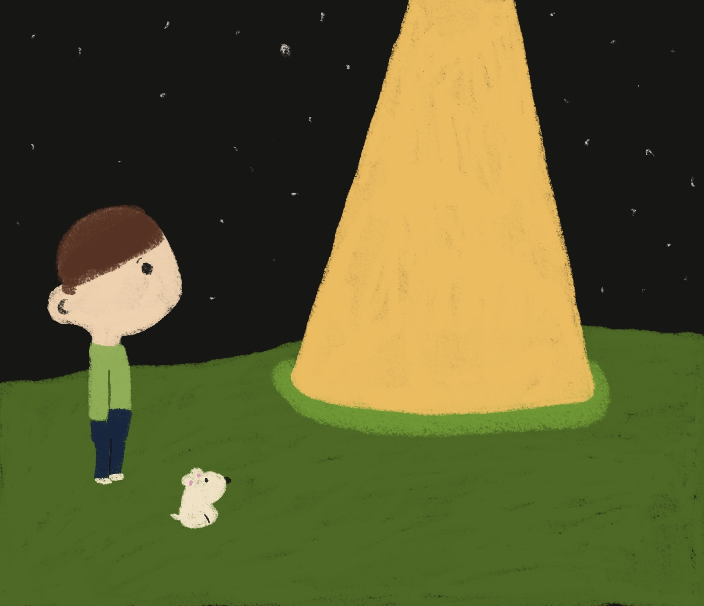

Hello, everyone
I have made this website to talk about something that happened to me on the 21st of November 2025.
I had been out all day and got back later than usual. It was already dark out, but my dog Scoot needed his evening walk.
There was a frost in the air, but no wind, so the walk was pleasant and not too cold. We did our usual route towards a field near my house. The sky was clear, unusual for a winter's night here. It was nice seeing the stars for once. I noticed one was brighter than the rest, I assumed it to be a planet.
Halfway through the walk, I took a moment to stop and look at the sky when I noticed the 'planet' starting to get larger. That is when I took my phone out and took the photo that can be seen in the gallery section of my website. After that, things proceeded quickly. What I thought was a planet was now getting closer, and soon I saw something like an aircraft. Now I was scared, as my next thought was that I was in the path of an out-of-control plane.
I turned around and started to run for my life. Approaching the gate, I turned around to see that the craft had landed. I was paralyzed with fear. In front of me, the craft was square in shape and silver with a green glow. A hatch opened, and a creature slowly appeared. Its skin was pale and translucent. It walked on two legs but was not human.
You're probably wondering why I am not running away at this point, but the thing is, I couldn't, it's as if the creature had paralyzed me. I was stuck in place, and so was Scoot. He always barks at strangers, but now he was silent. It was painfully quiet, it was like time had stopped. The only sound was a slight hum from the craft. The creature slowly came towards me. As it came closer, I could hear a voice. I felt a bit relieved. I thought another person was also witnessing this strange event, but I soon realized that the voice was that of the creature. I was confused, its large dark eyes were staring straight at me, but its mouth was not moving. How was it getting words into my head?
"Danger" "E247" was what it kept repeating. The creature was now right in front of me and slowly lifted its arm, its fingers were long, and one of them reached out and touched the middle of my forehead. Then slowly it turned around and retreated back to its craft. There was a blinding light, then darkness. The creature was gone, and I could move again. I ran as fast as I could back home. I got through the door and stopped. I was shaking uncontrollably. I was terrified. I did think about calling the police, but what could they do? They would probably section me anyway.
That night, I couldn't sleep my thoughts were racing. Was I actually going crazy, and had I imagined this whole thing? I had never had a hallucination before, and nothing evenful was going on in my life. Then my thoughts switched to what the alien said, "danger", "E247", what could that mean, is that the name of the place it's from, and why did it touch my head? Was that their way of a friendly greeting, or did it do something to me?
Some time during the night, I had fallen asleep, and I woke up feeling relieved. What if this were a dream? I walked downstairs and was greeted by Scoot. He was happy and did not look like he had seen an alien the previous night, but he is a dog. My mum was up, and she invited me on a walk with her and Scoot, which meant going back to the place where I had seen the alien, but it would be a good chance to investigate the area without being alone. If a craft had landed during the night, there surely would be some evidence.
I got to the point in the walk where the event happened, and to my relief, there was no sign of an alien craft. It was like a weight had been lifted off my shoulders, and I was able to continue my walk happy and relaxed. We had nearly finished our walk and were approaching the gate when Scoot found something. I thought it was some food, so I ran over to take him away. When I noticed something white, it was some paper, and printed on it was "E247." My heart stopped. It wasn't a dream.
Thank you for taking the time to read about my experience, i'm hoping this will reach the right people and maybe i can find other who have had similar encounters, You can find my contact details here.

10.03.2026
Hello everyone :)
Today is a big day for me, it is the day i set off on my 2 month trip. I will be visiting 16 countries solo, this is a big step for me as i have never traveled alone before even getting the bus to town i prefer having someone with me.
After my alien encounter i have struggled to live my life to the fullest, although they didn't harm me i can only wonder what their intentions were and why they deicde to talk to me. i wonder if they will return again and don't want to be alone when this happens, but that could never happen and i will be wasting my time.
name: Jet
birthday: 11/02
sign: aquarius
animal: dog
food: orange
drink: water
Song: mr blue sky